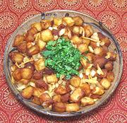

|
Aloo Chaat- (Fried Potatoes)India - North - Aloo Chat | ||||
| Serves: Effort: Sched: DoAhead: |
4 snack *** 55 min Part |
This dish, with many variations, is sold by thousands of street vendors in Northern India and Pakistan. It is commonly served with various chutneys, but this Aloo Chaat has enough flavor to stand alone. | |||
|
1-1/2 5 1 ------ 1 1 1/8 ------ 2/3 1.4 1/2 1/4 ------ a/r 2 ------ |
# oz -- in t t --- t t t t -- t --- |
Potatoes (1) Onion Chili Serrano (2) -- Aromatics Ginger root Lemon Juice Salt -- Spices Chaat Masala (3) Cumin Seed Chili Powder (4) Salt ------------- Oil, Deep Fry Lemon Juice -- Garnish Cilantro Leaves |
PREP - (25 min)
|